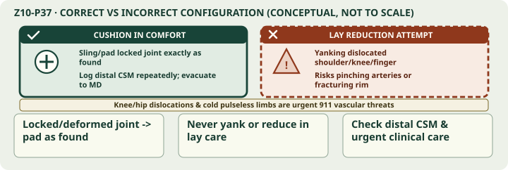

Z10-P37 · Wilderness medicine · New manuscript
Support suspected joint dislocations in comfort without lay reduction attempts
Protect nerves and blood vessels around a dislocated shoulder, knee, or finger by immobilizing in the position of comfort for clinical care.
When it applies · Visible joint step-off, locked joint range, or sudden severe joint pain after a fall or wrenching force.
Equipment · Soft sling/swathe or padded splint cushions, watch, and emergency communications.

Actions
- Immobilize a suspected dislocated shoulder, elbow, kneecap, hip, or finger gently in the position of greatest comfort using padded slings or pillows—do NOT yank or attempt lay joint reduction in the field.[M09, M10]
- Check distal circulation, sensation, and movement (CSM) immediately and repeatedly; knee and hip dislocations carry especially high artery-injury risk requiring urgent EMS transport.[M09, T02]
- Keep the patient warm, withhold food/water if surgical sedation may be needed at the hospital, and arrange prompt clinical orthopedic evaluation.[M09, M05]
Failure recognition · Having untrained bystanders tug forcefully on a dislocated arm or knee, trapping an artery or fracturing the joint rim.[M09]
Verify · Confirm the joint is cushioned comfortably as found, distal CSM is logged, and clinical evacuation is underway.[M09, M20]
Stop or change course · Any pale, cold, pulseless, or numb extremity beyond a dislocated joint is a limb-threatening emergency requiring immediate 911 activation.[M09, T02]
Evidence and editorial notes
- M05 · NIH / MedlinePlus · Shock (current web edition)
- Section: Recognizing Circulatory Shock and Positioning · Conditions: Injured or ill patient with pale cool clammy skin, rapid weak pulse, confusion, or dizziness
Support: Treat suspected shock as a life-threatening emergency: call 911, control external bleeding, keep the person warm and insulated from cold ground, and do not give food or drink.
Limitations: Field responders cannot diagnose internal hemorrhage or administer IV fluids. · Conflicting evidence: None; reinforces keeping suspected shock patients NPO and warm.
Editorial note: Core shock recognition and stabilization boundary in Z10. · Specialist reviewer: Emergency and wilderness medicine
Primary source · checked 2026-11-24 - M09 · NIH / MedlinePlus · Fractures (current web edition)
- Section: Suspected Fracture Stabilization and Neurovascular Checks · Conditions: Suspected limb fracture, deformity, or inability to bear weight
Support: Immobilize the injured limb in the position found using padded support without attempting to straighten visibly deformed bones; check circulation, sensation, and movement beyond the injury and arrange evacuation.
Limitations: Open fractures (bone breaking skin) and femur/pelvis injuries carry high bleeding and infection risk requiring urgent EMS. · Conflicting evidence: None; forbids lay fracture reduction in routine field care.
Editorial note: Anchors splinting, neurovascular checks, and evacuation urgency in Z10. · Specialist reviewer: Orthopedics and wilderness medicine
Primary source · checked 2026-11-24 - M10 · NIH / MedlinePlus · Sprains and Strains (current web edition)
- Section: Soft-Tissue Sprain/Strain Care and Mobility Decisions · Conditions: Ankle, knee, or wrist sprains without deformity or open wound
Support: Rest the joint, support with comfortable stabilization, protect from further load, and evaluate whether the patient can safely self-evacuate or requires extraction; persistent inability to bear weight warrants clinical imaging.
Limitations: Severe sprains and undisplaced fractures cannot be reliably distinguished without X-ray. · Conflicting evidence: None; treats field assessment as functional evacuation triage, not diagnosis.
Editorial note: Prevents walking on unstable fractures under the assumption of a mild sprain. · Specialist reviewer: Sports and wilderness medicine
Primary source · checked 2026-11-24 - M20 · NIH / MedlinePlus · First Aid Overview (current web edition)
- Section: Lay First-Aid Scope, Kit Readiness, and Documentation · Conditions: Pre-trip kit preparation and remote patient monitoring
Support: Maintain an inspected, unexpired first-aid kit matched to your actual training, keep written patient observations (time, responsiveness, breathing, symptoms, interventions) for EMS handoff, and practice skills in certified courses.
Limitations: Carrying advanced medical instruments without clinical training adds risk rather than capability. · Conflicting evidence: None; aligns with ARC and NPS-K.
Editorial note: Anchors kit sizing, SOAP-style lay observation logs, and scope-of-practice cards. · Specialist reviewer: Wilderness EMS and clinical education
Primary source · checked 2026-11-24 - T02 · American Red Cross · First Aid Steps (current web edition)
- Section: First Aid Steps > Call 9-1-1 · Conditions: Lay emergency response to unresponsiveness, abnormal breathing or severe bleeding
Support: Activate EMS and get needed equipment. Follow dispatcher directions and act within training.
Limitations: Remote locations may delay EMS arrival, requiring sustained stabilization after activation. · Conflicting evidence: None; aligns with NPS-E.
Editorial note: Mandates early emergency activation and dispatcher adherence. · Specialist reviewer: EMS and wilderness medicine
Primary source · checked 2026-11-24
Source lineage · NIH MedlinePlus Fractures and Sprains; new manuscript · Classification · New manuscript.